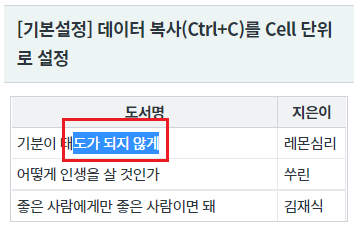
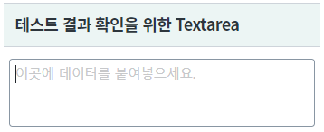
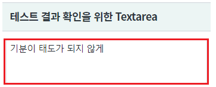
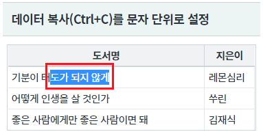
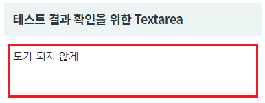
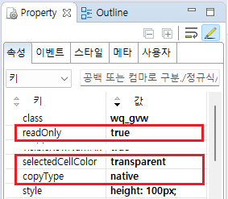
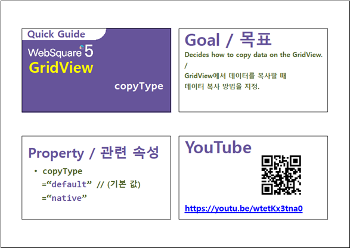

GridView의 Cell 데이터 중 일부 문자열만 복사(Ctrl+C)를 하는 예제입니다.
문자열 선택은 마우스 드래그(Drag)를 통해 사용합니다.
기본 설정은 데이터가 Cell단위로 복사되며, 설정을 통해 문자 단위로 복사할 수 있습니다.이 기능은 GridView가 읽기전용(ReadOnly)으로 설정되었을 때 Cell의 데이터 중 일부 문자열을 복사하기 위해 만들어졌습니다.
[기본 설정] 데이터 복사(Ctrl+C)를 Cell 단위로 설정
데이터 복사(Ctrl+C)를 문자 단위로 설정
이 예제는 문자열 선택 범위가 잘 노출될 수 있도록 GridView의 설정 중 Cell 선택 시 배경색을 투명(selectedCellColor="transparent")으로 변경하였습니다.
Cell의 데이터 중 일부 문자열을 마우스 드래깅을 통해 선택합니다.
[브라우저(Chrome) 실행 예시 - 문자열 선택 예시]

문자열 선택 후 복사(Ctrl+C)합니다.
아래의 "테스트 결과 확인을 위한 Textarea" 영역의 TextArea에 문자열을 붙여넣기(Ctrl+V)합니다.
[브라우저(Chrome) 실행 예시 - 테스트 결과 확인을 위한 Textarea]

Cell의 전체 Data인 "기분이 태도가 되지 않게" 가 붙여넣기 되었음을 확인합니다.
[브라우저(Chrome) 실행 예시 - 붙여넣기 결과]

Cell의 데이터 중 일부 문자열을 마우스 드래깅을 통해 선택합니다.
[브라우저(Chrome) 실행 예시 - 문자열 선택 예시]

문자열 선택 후 복사(Ctrl+C)합니다.
아래의 "테스트 결과 확인을 위한 Textarea" 영역의 TextArea에 문자열을 붙여넣기(Ctrl+V)합니다.
[브라우저(Chrome) 실행 예시 - 테스트 결과 확인을 위한 Textarea]
"도가 되지 않게" 가 붙여넣기 되었음을 확인합니다.
[브라우저(Chrome) 실행 예시 - 붙여넣기 결과]

DataList 생성 및 연결은 생략되었습니다.
GridView의 속성을 정의합니다.
[필수] copyType="native" //복사(Ctrl+C)시 선택된 문자열만 복사합니다.
"default": (기본 값) 데이터 복사 시 focus된 cell들 전체를 복사한다. 여러 cell을 복사한 경우 붙여넣을때도 여러 cell에 걸쳐 붙여넣기가 됩니다.
"native" : 하나의 cell에서 일부의 데이터만 복사하고 싶을 때 사용한다. 여러 cell의 내용 일부를 복사할수는 있으나 붙여넣기는 항상 1개의 cell에만 붙여넣기됩니다.
[선택] readOnly="true" //GridView 설정을 읽기 전용으로 설정합니다.
[선택] selectedCellColor="transparent" //선택된 Cell의 배경색을 투명으로 설정합니다.
그림 1.[웹스퀘어5 SP5 스튜디오의 Property View(속성창) 예시]

<!-- gridView 의 소스 본문 예시 --> <w2:gridView copyType="native" readOnly="true" selectedCellColor="transparent" dataList="data:dlt_books"> <!-- 중략 --> </w2:gridView>
[웹스퀘어5 SP5 개발 가이드] GridView
링크 : https://docs1.inswave.com/sp5_user_guide/86bdcf48029b958b
[웹스퀘어5 SP5 개발 가이드] GridView 복사 방식 결정 (copyType)
링크 : https://docs1.inswave.com/sp5_user_guide/86bdcf48029b958b#30b39be0ddff21bc
GridView 복사 방식 결정 (copyType)
링크 : https://youtu.be/wtetKx3tna0
